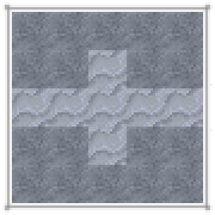
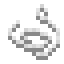
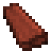
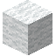
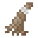
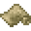
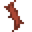

札札弄機杼
織布術是一種將線變為布匹的工藝。雖然將線織成布只需要織機就行了，但想要將產毛動物的毛捻成羊毛紗線就得先做一隻紡錘。
紡錘頭可以透過粘土塑形來製作。先將粘土如圖捏成未燒製的紡錘頭$，然後在將其加熱即可。將紡錘頭與木棍合成便能做出紡錘了


8
將羊毛與紡錘合成，得到羊毛紗.




可以用木材和木棍製作織機。

16
每 16 卷羊毛紗能夠織成一匹羊毛布。首先，手持羊毛紗對準織機按右鍵。接著持續右鍵點選織機。待織機處理完整匹毛布後再次按右鍵就可以取下布匹了。

織機織布的幾個不同階段。
4
8
羊毛布可以合成成羊毛塊。羊毛塊可以染色。
24

織機可以將蛛絲織成絲綢。絲綢在某些配方中可以代替羊毛布。
12


黃麻纖維可以織成粗麻布，但現在看來它還是沒有什麼用的樣子。

